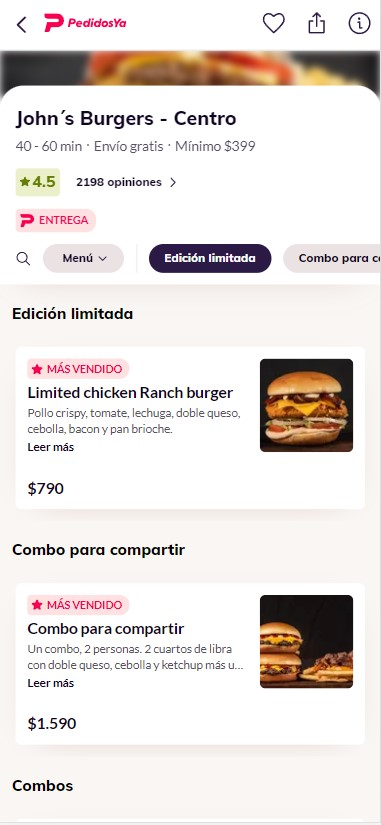
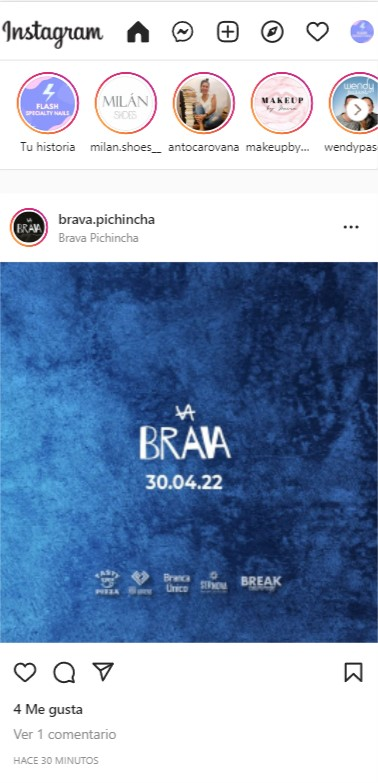

Visual hierarchy
BYU-Pathway Worldwide
byupathway.orgThe design of this website enhance this benefit of studing in BYU Pathway and draw the attention to the paragraph under that statement. Then, in an smaller font size, it entroduces how it works, and under that short paragraph in ilustrates with small simple images the three certificates we can achieve before earning a bachelor's degree.
Hick's Law
pedidosya.com The design of this restaurant's delivery website shows just a few options in our viewport at the time, making easier for us to choose what to order. The buttons are clear and separeted one from the other, allowing our eyes to scan two or three options at the same time and make a decision faster.
Fitt's Law
instagram.com This social media website illustrates the principle of Fitt's law, allowing us to interact with the elements of the site without moving our fingers very much, because we can interact with the image that is in the middle of the screen just tapping twice, pressing the few buttons around it, or pressing the round items of stories that are always visible on the top of the screen. It makes the central image of the screen the principle target to interact with, and the stories upon it the second target for us.